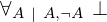

Show the Proof¶
In [1]:
import proveit
# Automation is not needed when only showing a stored proof:
proveit.defaults.automation = False # This will speed things up.
proveit.defaults.inline_pngs = False # Makes files smaller.
%show_proof
Out[1]:
| step type | requirements | statement | ||
|---|---|---|---|---|
| 0 | instantiation | 1, 2 |  ⊢ ⊢  | |
 : :  , : , : | ||||
| 1 | theorem | ⊢  | ||
| proveit.logic.booleans.implication.untrue_antecedent_implication | ||||
| 2 | instantiation | 3, 4 | ⊢  | |
| : | ||||
| 3 | theorem | ⊢  | ||
| proveit.logic.booleans.implication.not_true_via_contradiction | ||||
| 4 | deduction | 5 | ⊢  | |
| 5 | instantiation | 6, 7, 8 | , ⊢  | |
:  | ||||
| 6 | theorem | ⊢  | ||
| proveit.logic.booleans.negation.negation_contradiction | ||||
| 7 | deduction | 9 | ⊢ | |
| 8 | assumption | ⊢ | ||
| 9 | assumption | ⊢ | ||